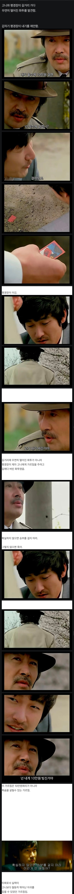
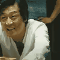

타짜 1 삭제 장면
댓글
수미상관 크
그러기엔 너무 하나하나 다 설명하는거 같아서 짤랐다고 하더라. 나도 개인적으로는 생략된게 마지막 임팩트 면에서 좋은거 같음. 과거에 평경장과 배웠던 것들과 짝귀의 가르침만으로도 충분히 마지막 시퀀스를 설명해줬다고 생각하거든
ㄹㅇ 뺄만 해서 뺐음
마지막에 엔딩크레딧 올라가고 쿠키영상으로 올려줬으면 쌌을꺼같다
맞긴한데 너무 명장면이많아서 반대로생각해야함 명장면 만큼 맛있을까?
저거 만화에서 본거같은데
삭제되서 아쉽네
타짜 감독판 내야겠네
#릴리즈 더 최동훈컷
이거 밤장면으로 나온거 있지 않았나? 꽃핀곳 지나가면서 시간대 밤에 봤던거 같은데 ㄷㄷ
평경장: 꽃 좋다. 넌 저거이 뭘로 보이니?
고니: 화투짝 3요? 사쿠라요
평경장: 너도 이제 슬슬 미쳐가는구나야
막판의 극적임을 더 강하게 주려고 없앴나봄. 확실히 이게 중반쯤 들어갔다고 생각하면 그정도로 짜릿하진 않았을 거임
확실하지 않으면 승부를 걸지말라 이런거 안배웠어?(아귀는 진짜 안배움)
못 배워서 손이 잘렸어 ㅠ퓨ㅠㅠ

아 저 장면이랑 이어지는거였구나 사쿠라가. 고니가 덫을 놓은거였어
저 장면을 마지막 쿠키 느낌으로 넣었으면 어땠을까?
굿 아이디어긴 한데
저땐 쿠키영상이라는 개념 자체가 없었을 듯
같은 해에 나온 사생결단에도 쿠키 있었는데
98년에 개봉한 성룡의 러쉬아워에도 쿠키영상있었어......
아빠 나 촬영중이에여 잭키찬이랑 있다구요 바꿔보라구요? 너 바꿔달래
쿠키였으면 여운 지렸을듯
단순 도박 피지컬로는 아귀가 대장인거같음.
박력, 압박감 등 왠만한 타짜도 오줌 지릴듯
평경장아니고?
만화책에는 나오는 장면인데

자연빵으로 아귀가 급발진하게 만들어서 이긴줄 아는데. 영상분석결과 정마담에게 장짜리를 준게 맞음. 컵안에 들어가기 전인지 후인지 언제인지 모를 타이밍에 사쿠라로 바꿔치기한거
원작도 그렇고 첨부터 정마담에게 사쿠라 준 거 아님? 그래야 말이 되는데.
영화에서 아귀는 고니보다 훨씬 뛰어난 타짜임.
고니는 기술을 쓸 수 없지만(쓰면 바로 걸림)
아귀는 마음대로 기술을 쓸 수 있음.
그래서 고니는 계속 죽기만 하다 아수라발발타하면서 기술을 한 번 씀. 이게 훼이크임.
작중 아귀는 도박판에서 돈을 가지는 것 뿐만 아니라
상대방을 파괴시키는 것에도 심취해있는 인물임.
고니가 기술쓰는 걸 보자 슬슬 오함마를 준비해야 겠다하고 말하는 건 아마 고니가 기술 쓰는 걸 잡고 이 판을 끝낼 수 있겠다는 자신감일 거임.
짝귀는 구라를 칠 땐 상대방 눈을 보지 말라고 했음.
그런데 고니는 아귀의 눈을 똑바로 보면서 기술을 씀.
고니의 설계는 어차피 자신이 아귀의 상대가 안되지만 자신이 기술을 쓰는 걸 포착하면 아귀가 또 다른(신체와 돈 모두를 건) 도박판을 열 것으로 예상되기에 일부러 미끼를 던지는 것이었음.
선택한 기술은 밑장빼기, 이 기술은 소리로 분간할 수 있다고 평경장이 가르쳐 줬음. 손은 눈보다 빠르지만 과연 소리는 어떨까.
아귀는 바로 고니의 기술을 잡아내고 고니는 혼신의 연기로 잡아 떼다가 결국 아귀를 이김.
대략 이런 스토리인 것 같은데.
일부러 소리내면서 사쿠라까지 준게 스토리상 맞지
프레임 단위로 잘라서 보면 장이란 얘기가 많은데 얘기만 무성할뿐 어디서도 영상으로 확인할 수가 없음 그리고 진짜 장으로 줬다고 해도 관객 눈으로 확인도 안 되고 프레임 단위로 잘라서 봐야 확인이 되는 거면 그건 감독이 의도한 바가 아님
https://youtu.be/MBszVqQlv_g?si=SmDU-29raTooFiXA
와 맨날 주장만 하던거 영상으로 실제하는건 첨 본다 이건 내가 잘못 알았네ㅋㅋ
고니의 실력이 아귀보다 위였다는거고 확실하지않으면 승부걸지말라해서 확실히 이기는 수를 써서 이기는 흐름과 감독의 의도는 같음.
그건 동의 못함ㅋㅋ 프레임 단위로 자르고 화질개선 하지 않으면 확인도 불가능 하고 장을 사쿠라로 바꿨다는 아무런 암시도 주지 않았음 영상 내에서 아무것도 보여주지 않는데 이걸 감독의도라고 하는건 그냥 옥에티 가지고 하는 확대해석일 뿐임 나홍진 호프 처럼 자기는 거기가 지구라고 한적 없다는 것 마냥ㅋㅋ 그리고 고니의 실력이 아귀보다 확실히 위였으면 계속 지지도 않았겠지 자연빵으로 치는데 계속 진다? 아귀가 구라치는데 고니 실력으론 잡아내지 못하니까 도박수 걸어서 이긴거지
오 영상보면 정말인거 같긴 하네 ㅎㅎ 하지만 영화상 옥의티인것 같음.. 이미 고니는 아귀한테 구라로 이길 수 없다는걸 안 상태이고, 여기서 이미 준 패를 바꿔치기하는 리스크를 또 가져가기는 어려워 보임.. 그리고 이 장면을 위해 지금까지 평경장의 가르침이 빌드업이 됐던거고 아귀한테 구라가 안통하는데 기술을 두번이나 쓰는건 오히려 무리라고 봄..

만화에는 있는 장면임
평경장 : 짝수네..??
고니 : 버리시는거 보고 다시 바꿔치기했죠. 확실하지 않으면 승부를 걸지 마라 모르시나요?
난 지금껏 영화 마지막에 고니가 전화거는 상대가 화란인 줄 알았는데 고광렬이라고 감독이 알려주더라고
있었어도 괜찮았을 것 같은데